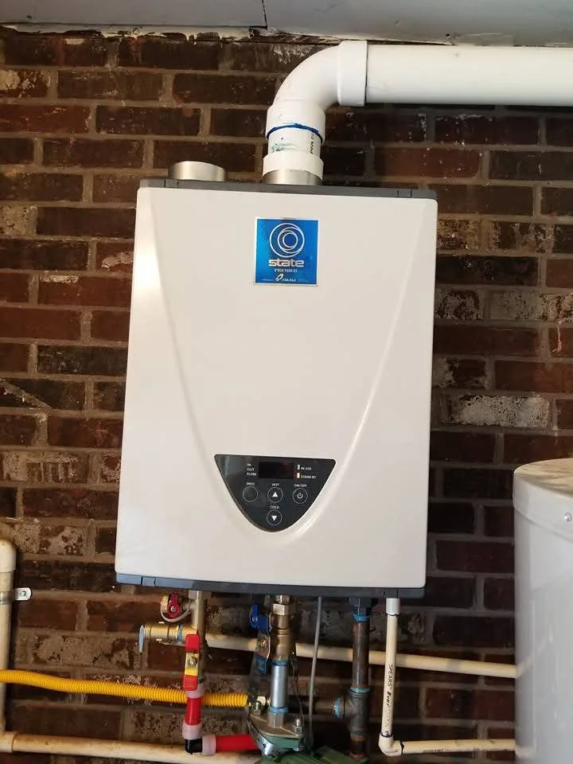
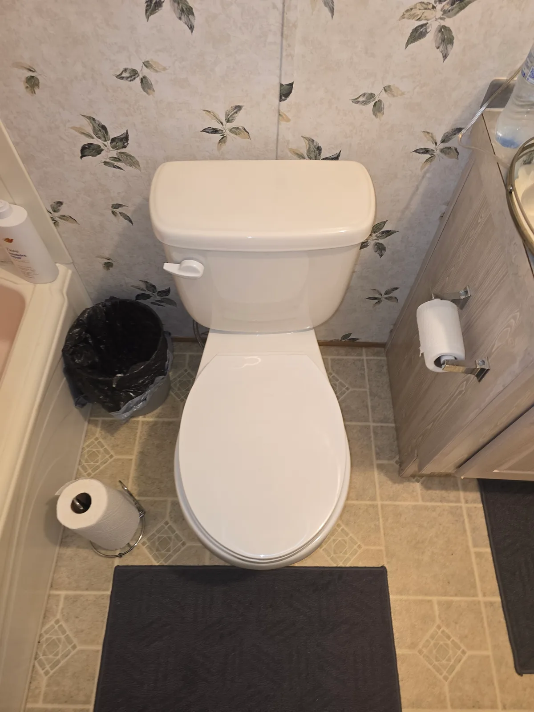
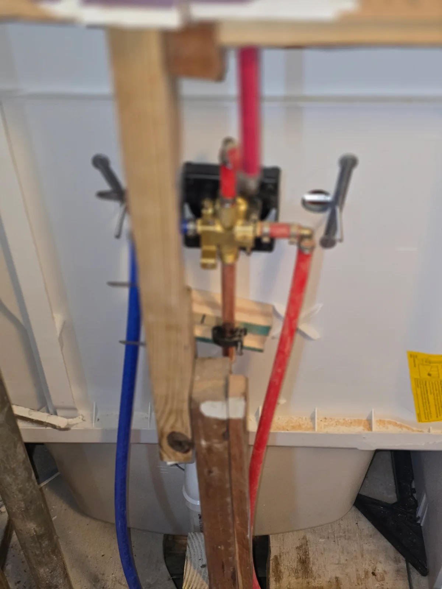
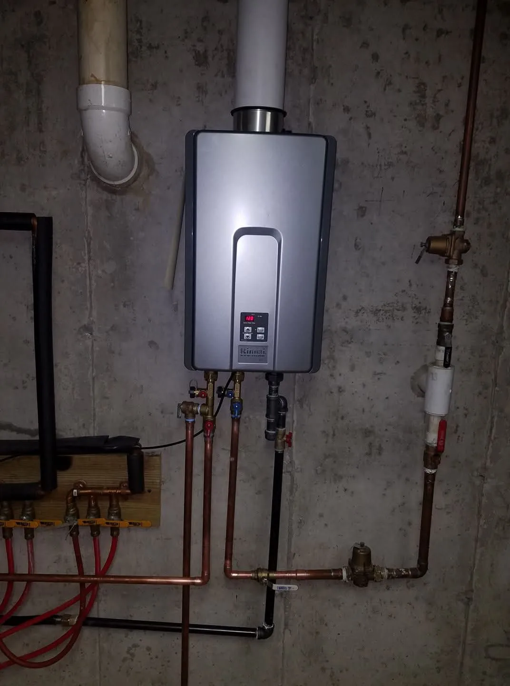
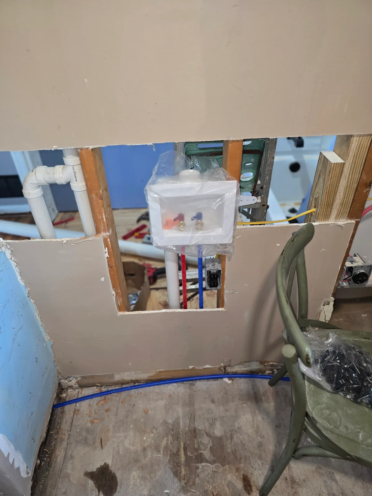
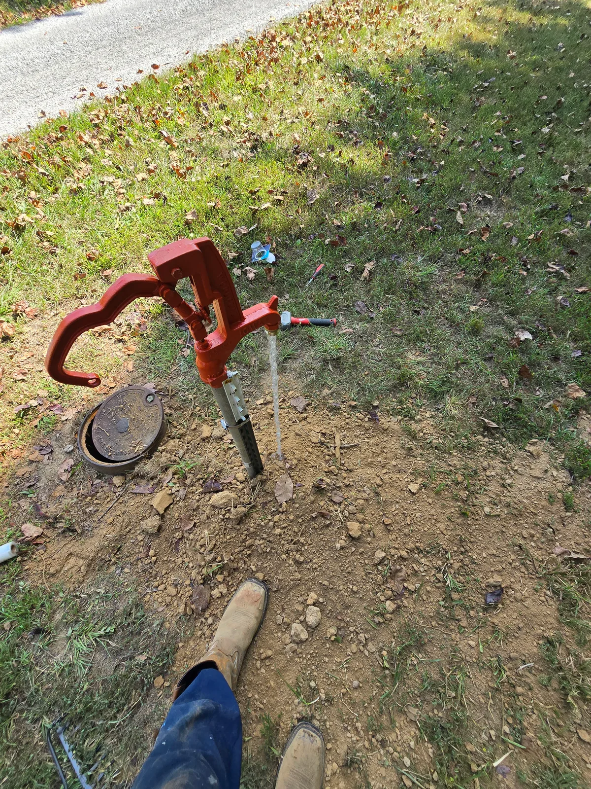

The plumber your
plumbing deserves.
Repairs, replacements, and upgrades.
For the place you call home.
For the business you’re building.
& surrounding communities
Let’s get it
taken care of.
Tell us what’s going on.
We’ll take it from there.




Superior plumbing.
Small fix.
Fresh start.
We’re here for both.
From a fixture that’s seen better days to a water heater ready for replacement, Superior Plumbing Services helps keep your plumbing working for you.
Explore our servicesWater heaters
Traditional or tankless, gas or electric. Talk with us about repairs, replacement, or an upgrade that fits your property.
Ask about your water heaterPlumbing repairs
A leak, a troublesome connection, or plumbing that isn’t working as it should? Tell us what you’re noticing so we can discuss the next step.
Text us about a repairFixtures & replacements
Toilets, shower valves, and laundry connections. Replace worn-out fixtures or bring your next room update together.
Talk through your projectPlumbing upgrades
Planning improvements to your home or light commercial property? Let’s talk about water lines, connections, and the plumbing your project needs.
Tell us what you’re planningA closer look at the work.
View our workHot water, upgraded.
Tankless water heater installation

Ready for the everyday.
Washing machine connections

Beyond the kitchen sink.
Outdoor yard hydrant installation
Your project.
Our kind of work.
Superior Plumbing Services is a full-service plumbing company serving residential and light commercial customers across Grayson County and surrounding communities.
Grayson County is home for Stephen Mudd, and it’s the heart of our service area. We also generally travel about 1 to 1½ hours from the county. Whether you know exactly what you need or just know something isn’t right, start with a call or text.
Get to know SuperiorA few things
you might be wondering.
How do I book a service?
Use the Book a service button to open our Housecall Pro booking page. You can also call or text 270-296-0733 to discuss what you need.
Do you work in my area?
Grayson County is home and our primary service area. We also generally travel about 1 to 1½ hours from Grayson County. Text us your location and a little about the work to confirm coverage and availability.
Can you help with a business property?
Yes. We handle residential and light commercial plumbing. Call to talk through the needs of your property.
Plumbing on your list?
Let’s handle it.
A repair today. An upgrade you’ve been planning.
It starts with a conversation.